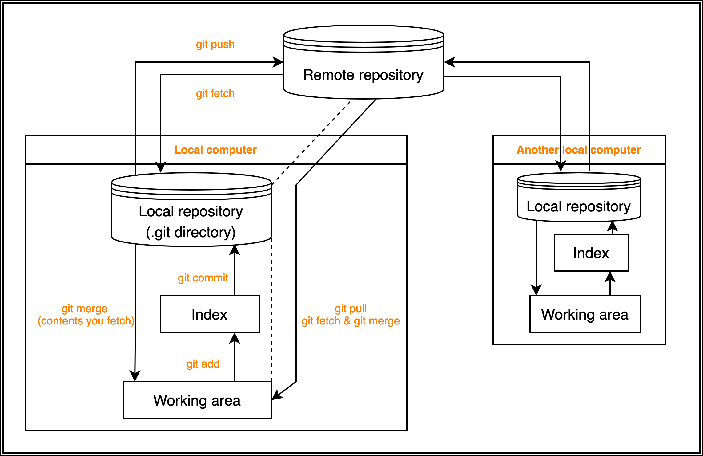

GitHub
Contents
1.4. GitHub¶
{kind=link}
1.4.1. VCS (version control system)¶
When developing source code or documentation, VCS(version control system) is a system that not only saves the latest state but also saves the state at every moments so that it can be referred back to or restored later. Program development does not necessarily proceed in a straight line from ver1 to ver2. Sometimes a program is divided into two or more branches: a stable version that maintains the current state and only fixes problems, and a development versions that actively adds new functions. Git has a branching mechanism that allows you to branch projects and develop each branches, and also allows you to merge the branched projects.
1.4.2. Local repository and remote repository¶
There are two types of repositories: local repositories on your PC and remote repositories on a shared server. Each repository stores the history of changes and other information. This type of management is called distributed version control.
You can learn Git/GitHub in detail at What is Git? and Bitbucket.
1.4.3. Basic commands¶
Create a new repository¶
First, make a repository on the GitHub website without initializing. Second, execute the commands below on the local computer
[mkdir project_name]
[cd project_name]
echo "# test" >> README.md
git init
git add .
(git add README.md)
git commit -m "first commit"
git branch -M main
git remote add origin https://github.com/<Username>/<repository>.git
git push -u origin main
git init makes repository, or .git, in the current directory.
git init project_name makes a directory named project_name and .git in it.
push an existing repository from the command line¶
git remote add origin https://github.com/<Username>/<repository>.git
git branch -M main
git push -u origin main
Clone¶
In an arbitrary directory,
$ git clone [branch, or you can omit here for main] https://github.com/<Username>/<repository>.git
$ cd <repository>
After you add or modify files:
$ git add <file>
($ git add . # add current directory)
($ git status)
$ git commit -m "<comment>"
$ git push origin main
($ git status)
take new changes of the remote repository into the local repository¶
$ git pull origin main
Tip
This is equivalent to
$ git fetch
$ git merge origin main
make a branch and change branches at local¶
When you make a repository, the only main branch exists at first. So, you are in the main branch by default.
You can check the current branch by
$ git branch
You can see all branches including the remote branches by
$ git checkout -a
1, Making new branch at local (branch not in remote)
Let’s make a new branch!
# make a branch
$ git branch <branch>
# switch to <branch> from main
$ git checkout <branch>
Tip
These two lines are equivalent to
$ git checkout -b <branch>
Then reflect the new branch to the remote repository.
$ git push origin <branch>
2, when remote/branch already exists
# create a new local branch pointing to the remote branch
$ git branch <branch> origin/<branch>
# check out that branch
$ git checkout <branch>
Tip
These two lines are equivalent to
$ git checkout -b <branch> origin/<branch>
.gitignore¶
You can configure Git to ignore files you don’t want to check in to GitHub.
All you have to do is write down filenames in .gitignore in the same directory as .git.
However, making .gitignore and writing filenames in each directory in the control of Git is troublesome. You can make .gitignore easily with gitignore.io website or gitignore.io CLI
As to some files, you will append their filenames in every .gitignore.
To avoid it, making ~/.gitignore_global is a solution. ~/ represents the home directory.
Note
First, make ~/.gitignore_global if you haven’t made it yet
install .gitignore.io from https://docs.gitignore.io/install/command-line
for macOS :
one time
$ git config --global core.excludesfile ~/.gitignore_global
$ echo "function gi() { curl -sLw "\n" https://www.toptal.com/developers/gitignore/api/\$@ ;}" >> \
~/.rc && source ~/.rc
make
.gitignore
$ gi macos,python,visualstudiocode >> ~/.gitignore_global
Refer to https://docs.github.com/en/get-started/getting-started-with-git/ignoring-files for details.
When you want to rename a repository¶
First, rename on GitHub website. Second, open the corresponding [.git->config], and [url = https://~.<rename_here>.git]
quit Git administration¶
All you have to do is remove the .git directory.
remove files¶
1, remove files from the repository and local directory 2, remove files from the repository
$ git rm FILENAME 1
$ git rm --cached FILENAME 2
$ git commit -m "delete"; git push origin main